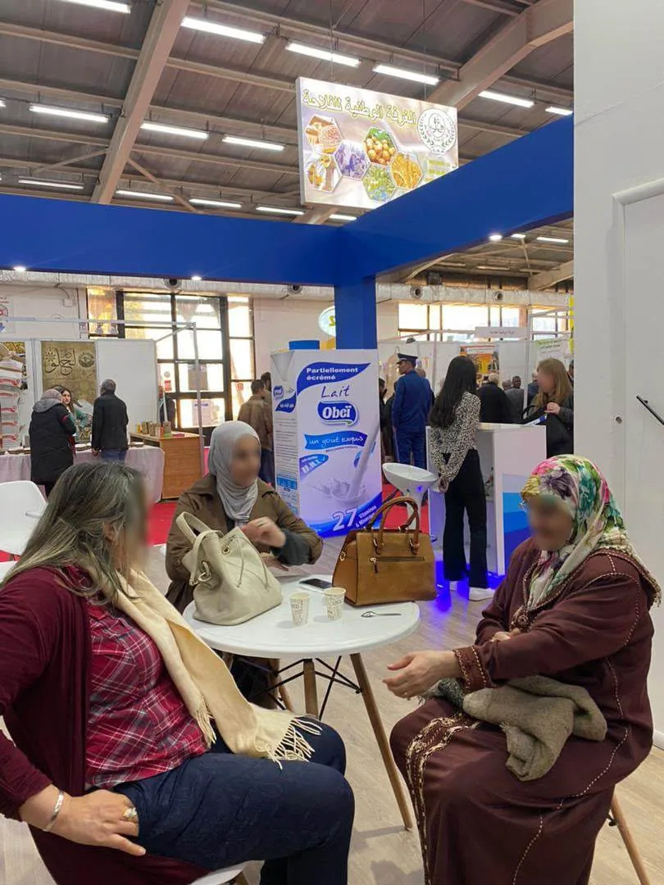

Une marque algérienne, un goût partagé.
Café Facto est une marque du Groupe Facto, société industrielle basée à Alger, spécialisée dans le café torréfié et moulu.

Du grain à la tasse.
Facto est née d'une idée simple : offrir aux familles algériennes un café de qualité, constant, pensé pour leurs habitudes. Sélection des grains, torréfaction, mouture et conditionnement en sachets protecteurs : chaque étape est maîtrisée.
Aujourd'hui, la gamme s'est élargie avec Grand Arabica, Sélection, Pure Robusta, un thé vert et des capsules Espresso, présents dans les commerces de proximité et les grandes surfaces.
Le goût
Des recettes stables d'un sachet à l'autre, pour retrouver la même tasse chaque jour.
Le savoir-faire
Une torréfaction adaptée à chaque grain : douce pour l'Arabica, plus poussée pour le Robusta.
Le lien
Une marque proche de ses clients, présente sur le terrain et sur les réseaux sociaux.
Le café comme prétexte pour se retrouver.
À la rencontre de nos clients.
Facto participe aux salons de la production nationale et anime des stands de dégustation en points de vente. Des moments privilégiés pour faire goûter la gamme et rencontrer revendeurs et distributeurs.

